🏠
日
月
縦書き／横書き

| 【対訳】ピーターラビット⑪ あひるのジマイマのおはなし ―THE TALE OF JEMIMA PADDLE-DUCK― | |
| ビアトリクス・ポター | |
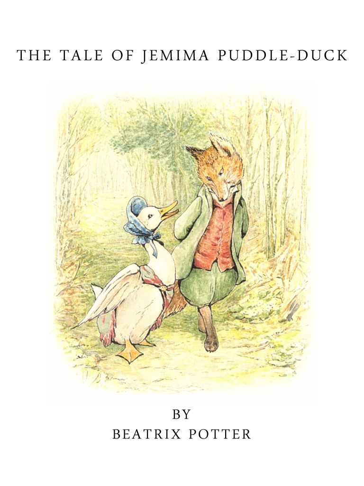
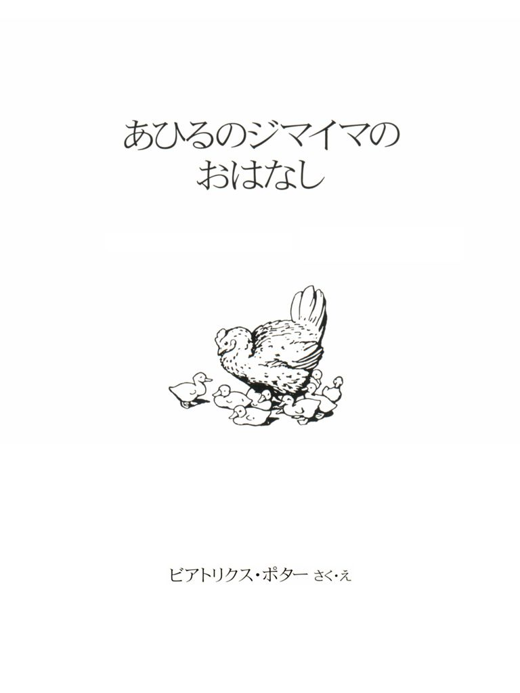
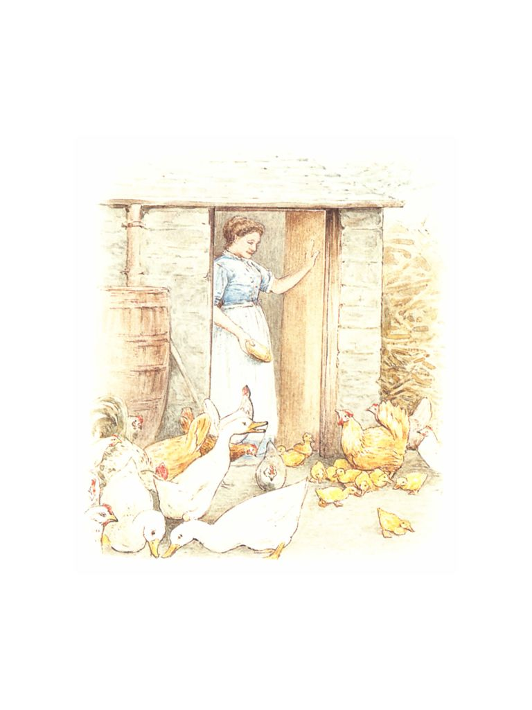
あひるのひなが、雌鶏を母親だと思って、一緒に居るところをみると、とっても面白い光景ですね。
――いまからはなすのは、あひるのジマイマのものがたりです。このあひるは、農場の奥さんが自分にたまごをかえさせてくれないことに悩んでいました。
What a funny sight it is to see a brood of ducklings with a hen!
---Listen to the story of Jemima Puddle-duck, who was annoyed because the farmer's wife would not let her hatch her own eggs.
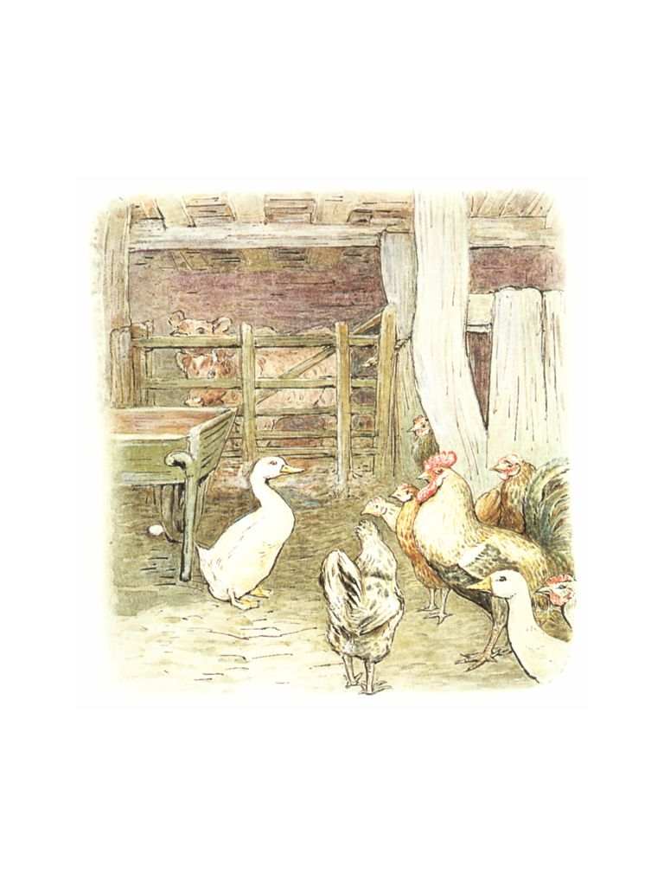
ジマイマの義理のおねえさんのレベッカは、自分のたまごを他のものにかえしてもらっても平気でした。
「私、たまごのを28日間も温めるなんて無理よ。ジマイマ、あなだだって無理よ。きっと、たまごを冷やしてしまうわ｣
「私は、自分のたまごは自分でかえしたいわ。私は、ひとりで全部かえしてみせるわ」、とガーガー、ジマイマは言いました。
Her sister-in-law, Mrs. Rebeccah Puddle-duck, was perfectly willing to leave the hatching to some one else---"I have not the patience to sit on a nest for twenty-eight days; and no more have you, Jemima. You would let them go cold; you know you would!"
"I wish to hatch my own eggs; I will hatch them all by myself," quacked Jemima Puddle-duck.
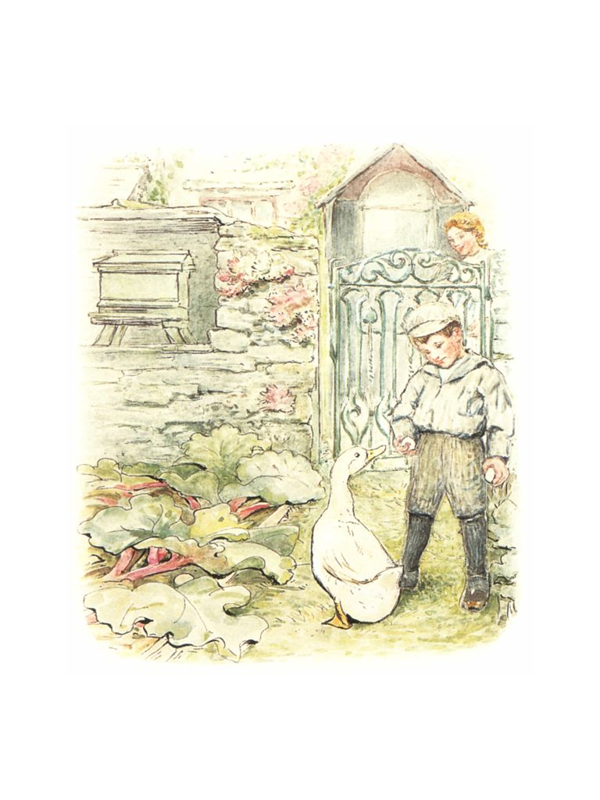
ジマイマは、自分のたまごをあちこちに隠そうとしました。けれども、いつも見つけられて持っていかれてしまうのです。
ジマイマは必死になりました。農場から離れた場所でたまごを産むことを決心したのです。
She tried to hide her eggs; but they were always found and carried off.
Jemima Puddle-duck became quite desperate. She determined to make a nest right away from the farm.
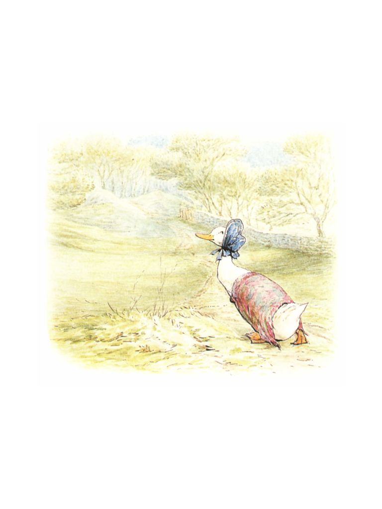
春のある晴れた午後、ジマイマは丘の馬車道を上っていきました。
帽子とショールを身に纏っていました。
She set off on a fine spring afternoon along the cart-road that leads over the hill.
She was wearing a shawl and a poke bonnet.
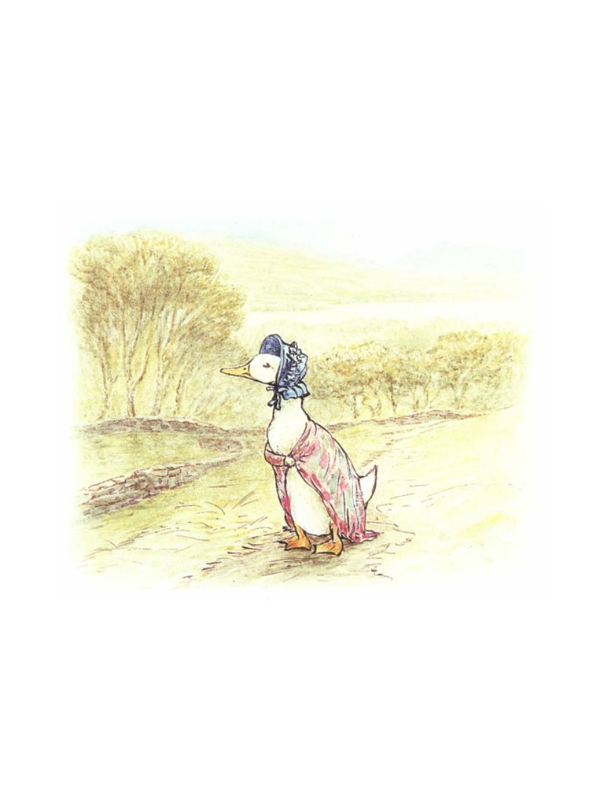
丘の頂上に着いたとき、遠くに森が見えました。
あそこなら、きっと静かで落ち着けるだろうと思いました。
When she reached the top of the hill, she saw a wood in the distance.
She thought that it looked a safe quiet spot.
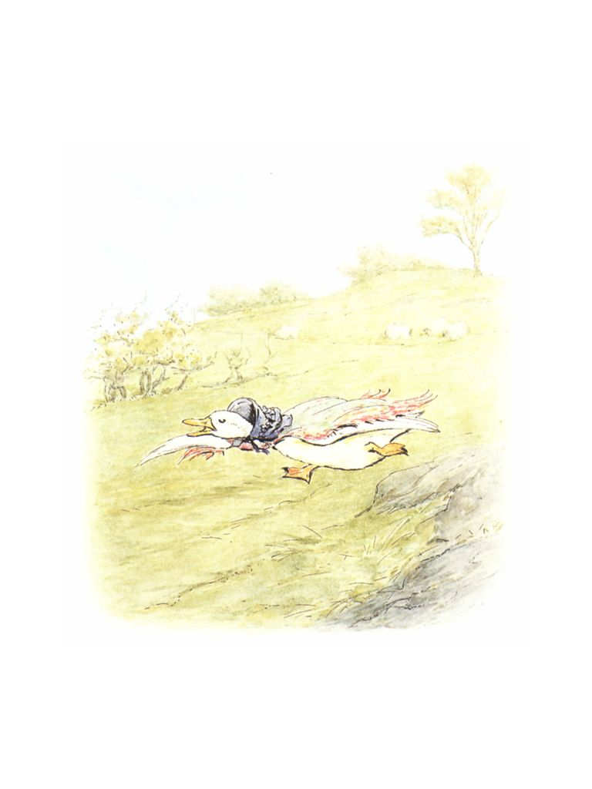
ジマイマは、いままで空を飛んだことはあまりありませんでした。ショールをはためかせながら丘の下へ、２～３ヤードを駆け下りました。それから飛び上がってみました。
Jemima Puddle-duck was not much in the habit of flying. She ran downhill a few yards flapping her shawl, and then she jumped off into the air.
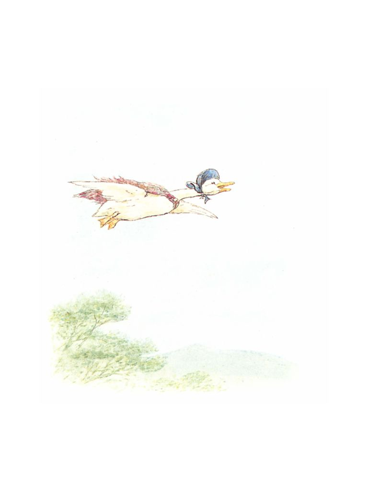
ちょうど勢いがうまくついて、見事に空を飛ぶことができました。
木のてっぺんを飛んでいくうちに、森の真ん中に開けた場所を見つけました。そこには木や藪がありませんでした。
She flew beautifully when she had got a good start.
She skimmed along over the tree-tops until she saw an open place in the middle of the wood, where the trees and brushwood had been cleared.
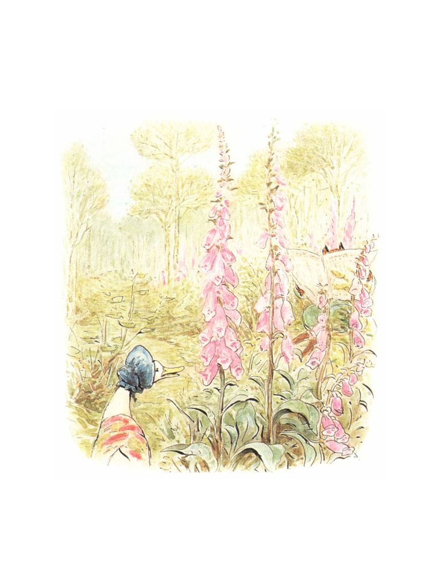
ジマイマはもたもたと降り立ち、巣を作るのにちょうど良い乾いた場所を探して、よたよた歩き始めました。背の高いジギタリスの間にある切り株がどうかな、とジマイマは思いました。
しかし、そのときジマイマはハッと驚きました。切り株にはエレガントな服を着た紳士が腰掛けて新聞を読んでいたのです。
彼の耳は黒くピンと立っていて、薄茶色のひげがありました。
「がー？」とジマイマは、頭と帽子を傾げて言いました。「がー？」
Jemima alighted rather heavily, and began to waddle about in search of a convenient dry nesting-place. She rather fancied a tree-stump amongst some tall fox-gloves.
But---seated upon the stump, she was startled to find an elegantly dressed gentleman reading a newspaper.
He had black prick ears and sandy coloured whiskers.
"Quack?" said Jemima Puddle-duck, with her head and her bonnet on one side---"Quack?"
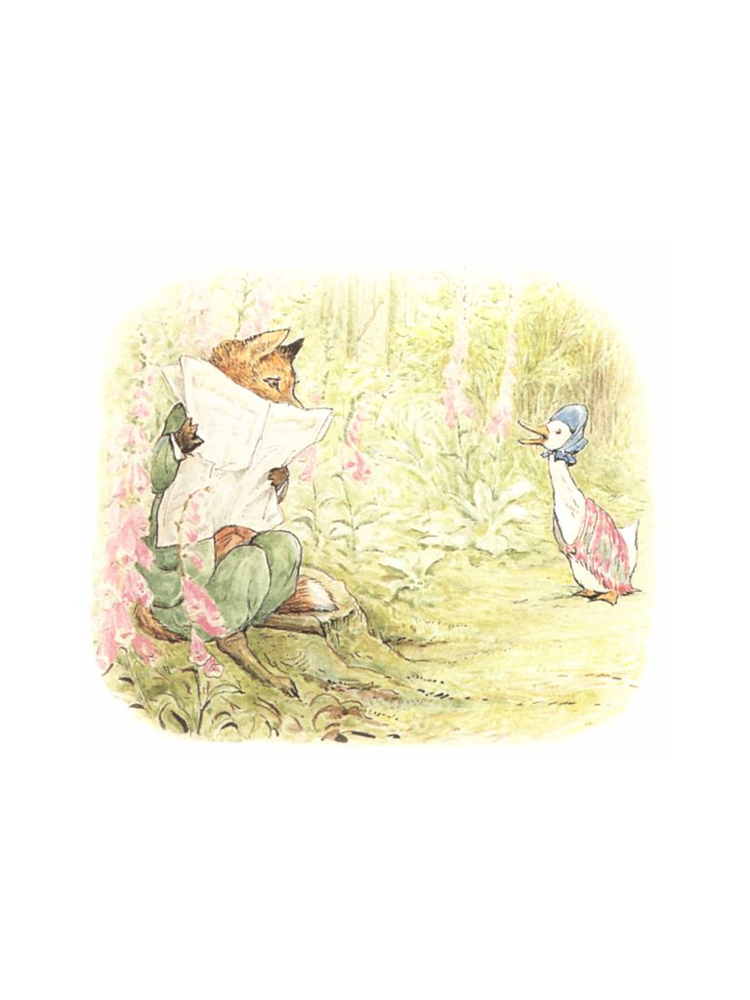
紳士は新聞から目を上げて、不思議そうにジマイマを見ました。
「奥さま、道に迷いましたか？」と、彼は言いました。
彼はふさふさしたしっぽを持っていました。切り株がいくらか湿っていたようだったので、彼はそのしっぽを下に敷いていました。
ジマイマは、彼は非常に礼儀正しくて品のある人だと思いました。
そこで、道に迷ったのではなく、たまごを産むカラッとした場所を見つけようとしていたと、説明しました。
The gentleman raised his eyes above his newspaper and looked curiously at Jemima---
"Madam, have you lost your way?" said he. He had a long bushy tail which he was sitting upon, as the stump was somewhat damp.
Jemima thought him mighty civil and handsome. She explained that she had not lost her way, but that she was trying to find a convenient dry nesting-place.
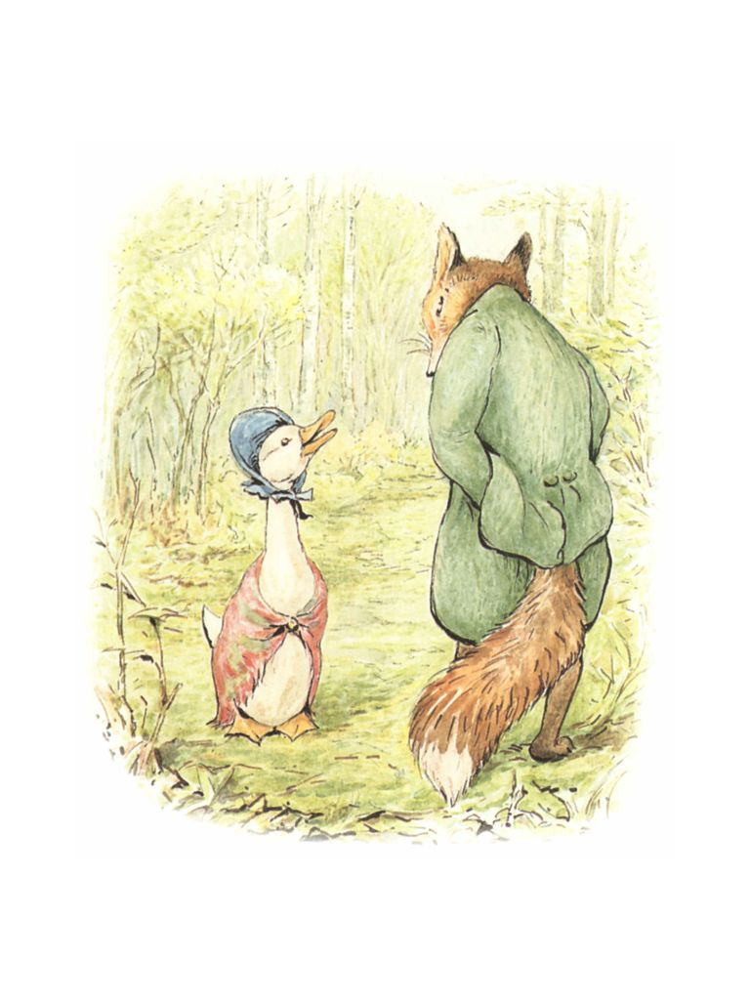
「ああ！ そうでしたか？ なるほど！」と、薄茶色のひげの紳士は言いました。そして、食い入るようにジマイマを見ました。
彼は新聞をたたみ、それをポケットにしまいました。
ジマイマは、お節介な雌鶏がいて困っているということを話しました。
「なるほど！ それは、それは！ その雌鶏とやらにお会いしたいものです。ひとつ、お節介をやめるように言ってやりたいところです！」
"Ah! is that so? indeed!" said the gentleman with sandy whiskers, looking curiously at Jemima. He folded up the newspaper, and put it in his coat-tail pocket.
Jemima complained of the superfluous hen.
"Indeed! how interesting! I wish I could meet with that fowl. I would teach it to mind its own business!"
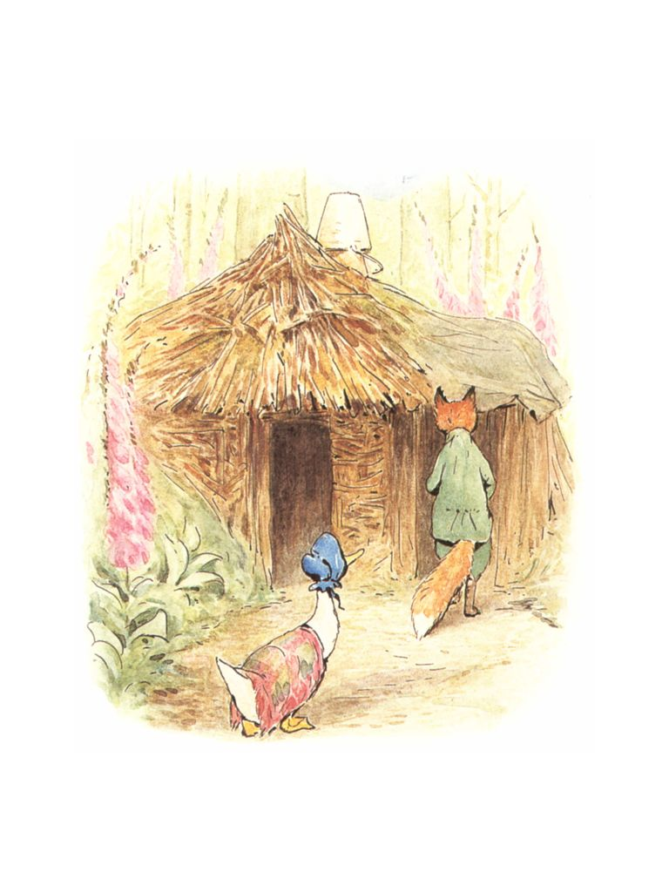
「しかし、たまごを産む場所なら――なんの心配いりません。私の薪小屋には、鳥の羽が袋に１杯分もあります。いやいや、奥さまの邪魔をするものはありません。お好きなだけお使いになってください」と、もじゃもじゃの長いしっぽの紳士は言いました。
彼は、ジギタリスに囲まれた非常に辺鄙な場所にある、陰気な家に案内しました。
芝土と小枝でできていて、そして壊れたバケツがふたつ、煙突の代わりに縦に重ねられていました。
"But as to a nest---there is no difficulty: I have a sackful of feathers in my wood-shed. No, my dear madam, you will be in nobody's way. You may sit there as long as you like," said the bushy long-tailed gentleman.
He led the way to a very retired, dismal-looking house amongst the fox-gloves.
It was built of faggots and turf, and there were two broken pails, one on top of another, by way of a chimney.
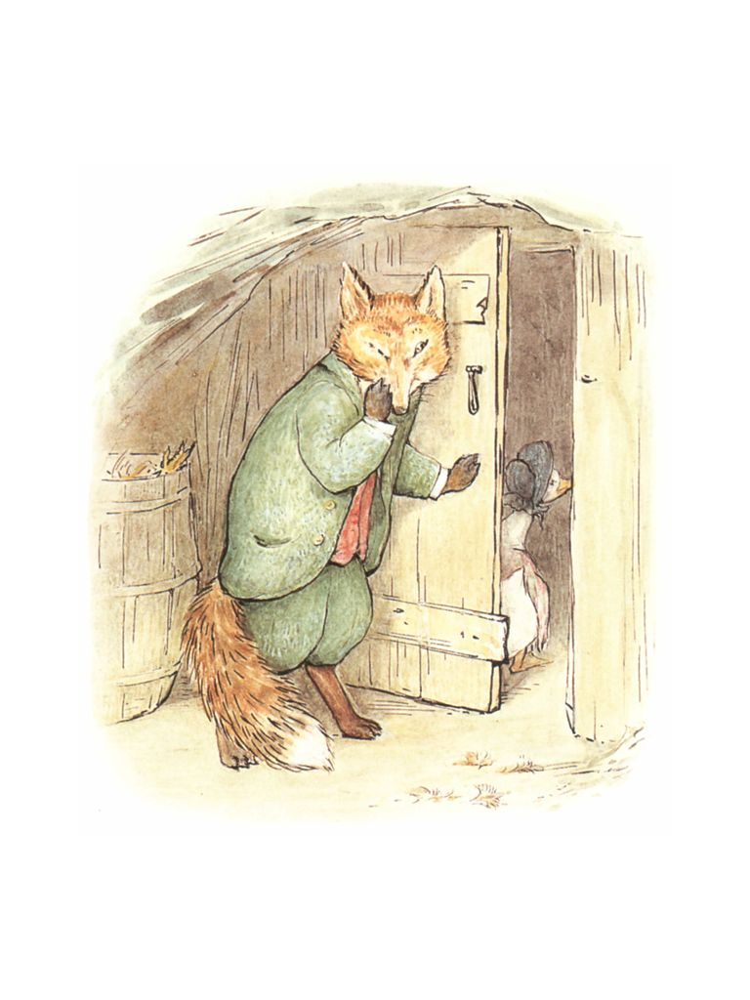
「ここは、私の夏用の別荘です。私の穴――いや、冬の家では――あなたに具合が良くないでしょうから」と、親切な紳士は言いました。
家の裏には、古い木箱で作られた壊れかけの小屋がありました。紳士はドアを開けて、ジマイマを中に通しました。
"This is my summer residence; you would not find my earth---my winter house---so convenient," said the hospitable gentleman.
There was a tumble-down shed at the back of the house, made of old soap-boxes. The gentleman opened the door, and showed Jemima in.
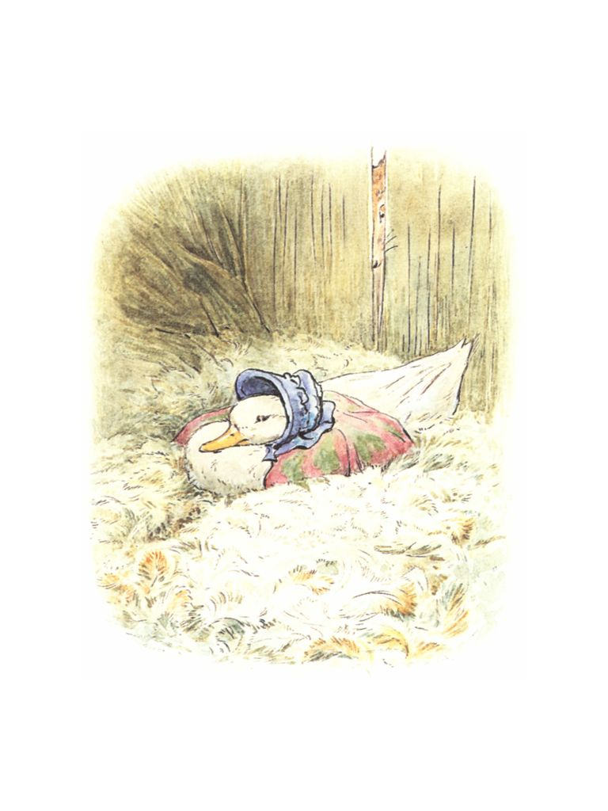
小屋の中は、息もできないほど鳥の羽でいっぱいでした。でも、とても柔らかく快適でした。
ジマイマは、鳥の羽があまりにもたくさんあるので驚いてしまいましたが、居心地は快適だったので、すぐにたまごを産む場所をつくることができました。
The shed was almost quite full of feathers---it was almost suffocating; but it was comfortable and very soft.
Jemima Puddle-duck was rather surprised to find such a vast quantity of feathers. But it was very comfortable; and she made a nest without any trouble at all.
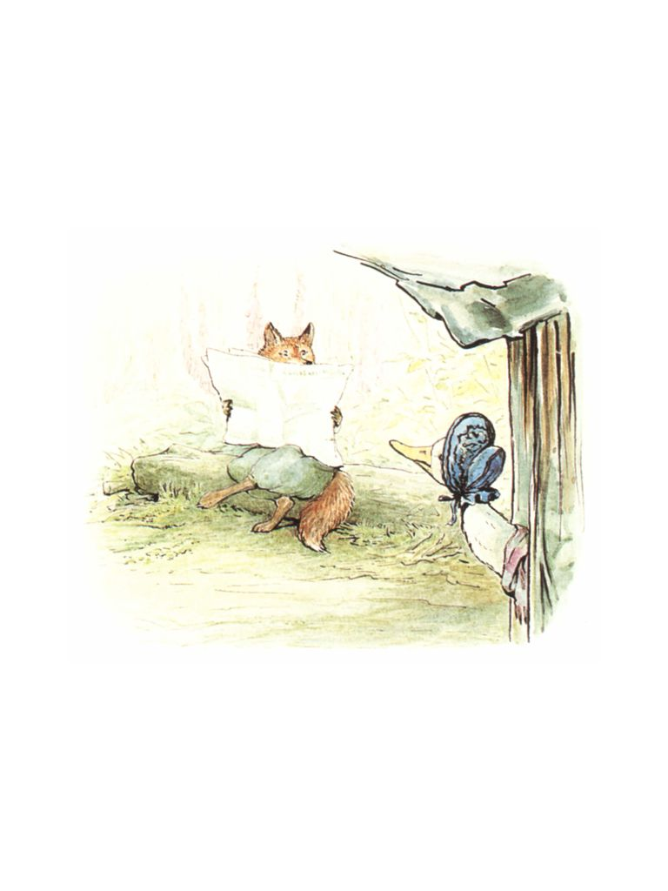
彼女が外に顔を出すと、薄茶色のひげの紳士は丸太に腰掛けて、新聞を読んでいるというか――少なくとも広げてはいましたが、眼差しは新聞ごしにこちらを見ていました。
紳士はとても親切で、ジマイマが夜になると家に帰ってしまうのをとても残念がりました。そして、次の日戻って来るまでしっかりと留守番をしてあげるよ、約束をしてくれました。
彼は、たまごやあひるのひなが大好きなので、自分の薪小屋でたまごを産んでもらえるなんて喜ばしい限りですよと言いました。
When she came out, the sandy whiskered gentleman was sitting on a log reading the newspaper---at least he had it spread out, but he was looking over the top of it.
He was so polite, that he seemed almost sorry to let Jemima go home for the night. He promised to take great care of her nest until she came back again next day.
He said he loved eggs and ducklings; he should be proud to see a fine nestful in his wood-shed.
その日からジマイマは、毎日お昼すぎに紳士の小屋に来ました。そして、巣の中のたまごは全部で９つになりました。薄緑色の大きなたまごでした。きつね顔の紳士は、そのたまごが大好きでジマイマがいないときには、いつもたまごをひっくり返して数を数えているのでした。
ついに、ジマイマは、明日からたまごを抱きはじめるつもりであると紳士に話しました――「たまごがかえるまで巣を決して出なくてもすむように、コーンを一袋もってきますわ。だって、たまごたちが風邪をひいてしまうかも知れないから」と、律儀なジマイマは言いました。
Jemima Puddle-duck came every afternoon; she laid nine eggs in the nest. They were greeny white and very large. The foxy gentleman admired them immensely. He used to turn them over and count them when Jemima was not there.
At last Jemima told him that she intended to begin to sit next day---"and I will bring a bag of corn with me, so that I need never leave my nest until the eggs are hatched. They might catch cold," said the conscientious Jemima.
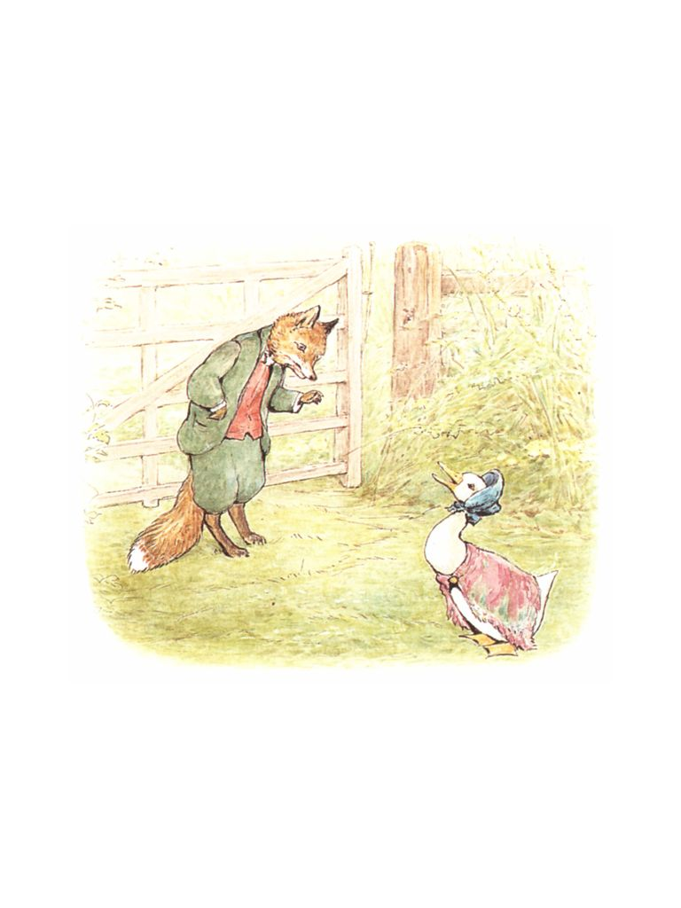
｢奥さま、食べ物のことなら、どうぞご心配しないでください。私のオート麦をお使いください。それより、退屈なたまごを抱きはじめる前に、あなたにごちそうさせてください。ふたりで晩餐会を開きましょう！
美味しいオムレツをつくるために、農場の畑から、セージとタイムとミント、それにたまねぎを２つとパセリ、こちらをご用意いただけますか？ ラードは私が用意します――オムレツにつかうラードは｣と、薄茶色のひげの親切な紳士は言いました。
"Madam, I beg you not to trouble yourself with a bag; I will provide oats. But before you commence your tedious sitting, I intend to give you a treat. Let us have a dinner-party all to ourselves!
"May I ask you to bring up some herbs from the farm-garden to make a savoury omelette? Sage and thyme, and mint and two onions, and some parsley. I will provide lard for the stuff---lard for the omelette," said the hospitable gentleman with sandy whiskers.
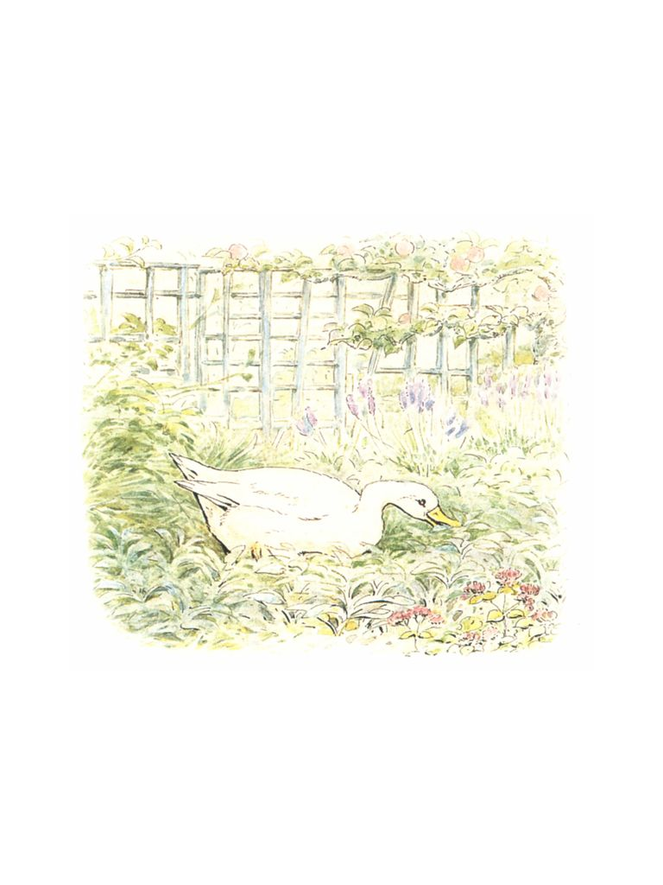
あひるのジマイマは、ちょっとおつむが足りませんでした。セージやたまねぎといわれても、まだおかしいとも思わなかったのです。
ジマイマは、農場を回って、ローストダックに使われるさまざまなハーブをかじって集めました。
Jemima Puddle-duck was a simpleton: not even the mention of sage and onions made her suspicious.
She went round the farm-garden, nibbling off snippets of all the different sorts of herbs that are used for stuffing roast duck.
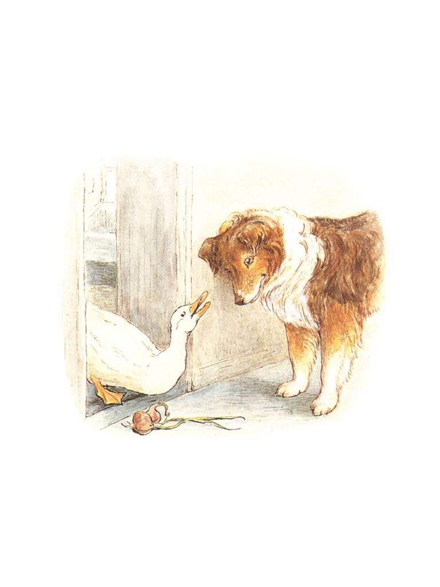
そして、彼女はキッチンによたよた入って、２個のタマネギをバスケットから取り出しました。
そして、外に出ようとしたとき、コリー犬のケップに会いました。「ジマイマよ、そのたまねぎをどうするんだい？ このごろ毎日午後になるとひとりで出かけているけど、どこに行っているんだい？」
ジマイマは、コリー犬のことをちょっと怖いと思っていました。そこで、今までの話を彼に全部話しました。
コリー犬は賢そうな頭を傾げて話を聞いていました。薄茶色のひげの紳士の話をすると笑顔を見せたのです。
And she waddled into the kitchen, and got two onions out of a basket.
The collie-dog Kep met her coming out, "What are you doing with those onions? Where do you go every afternoon by yourself, Jemima Puddle-duck?"
Jemima was rather in awe of the collie; she told him the whole story.
The collie listened, with his wise head on one side; he grinned when she described the polite gentleman with sandy whiskers.
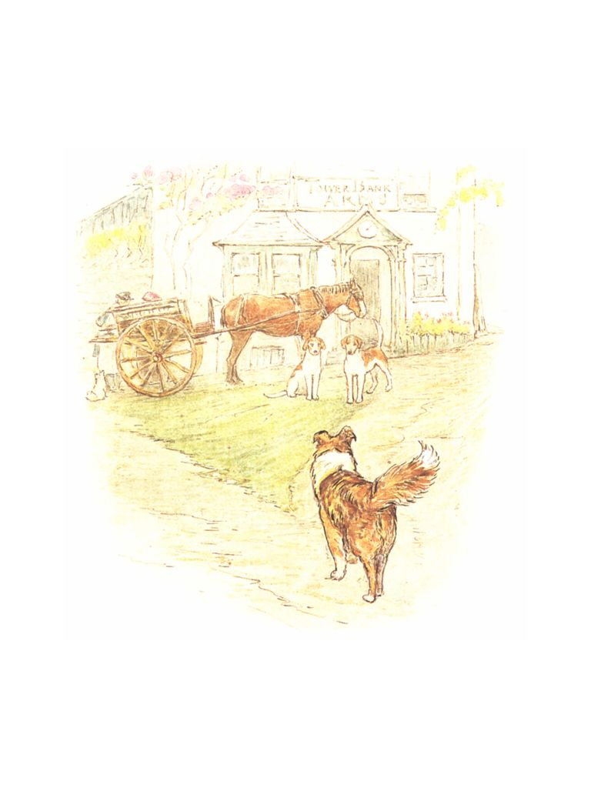
彼は、ジマイマの通っている森のことや、家と薪小屋の場所について、詳しく尋ねました。
それから、彼は村へと出かけて行きました。散歩に出かけていた２匹のフォックスハウンドの仔いぬを探しに行って、お肉屋さんの前で見つけたのです。
He asked several questions about the wood, and about the exact position of the house and shed.
Then he went out, and trotted down the village. He went to look for two fox-hound puppies who were out at walk with the butcher.
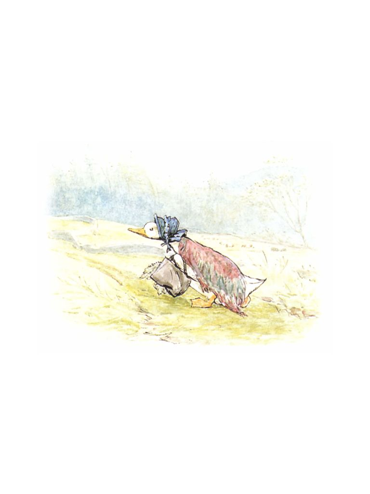
ジマイマは、太陽がさんさんと降り注ぐ午後、最後となる馬車道を上っていきました。ハーブと２個のタマネギが入ったバッグはちょっとした大荷物でした。
森を飛び越えて、もじゃもじゃの長いしっぽのある紳士の家の反対側に降り立ちました。
Jemima Puddle-duck went up the cart-road for the last time, on a sunny afternoon. She was rather burdened with bunches of herbs and two onions in a bag.
She flew over the wood, and alighted opposite the house of the bushy long-tailed gentleman.
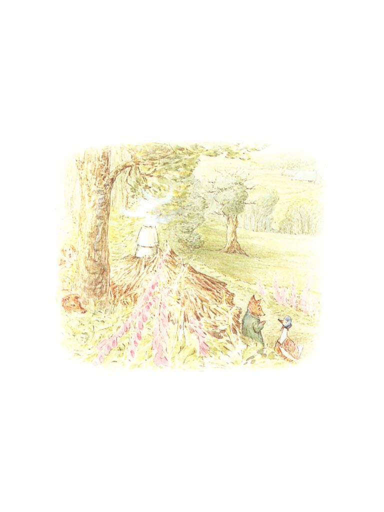
紳士は丸太の上に越し変えて、落ち着かない様子で、くんくんとアタリのにおいを嗅ぎながら森の辺りを眺めていました。ジマイマが降り立つと、紳士はびっくり驚いた様子でした。
「たまごを調べたら、すぐに家の方に戻ってきなさい。そのオムレツに使うハーブを私によこしなさい。さあ、はやく！」
彼がいつもとは違うそんな言い方をするなんて、はじめてのことでした。
ジマイマは驚いて、心細くなってしまいました。
He was sitting on a log; he sniffed the air, and kept glancing uneasily round the wood. When Jemima alighted he quite jumped.
"Come into the house as soon as you have looked at your eggs. Give me the herbs for the omelette. Be sharp!"
He was rather abrupt. Jemima Puddle-duck had never heard him speak like that.
She felt surprised, and uncomfortable.
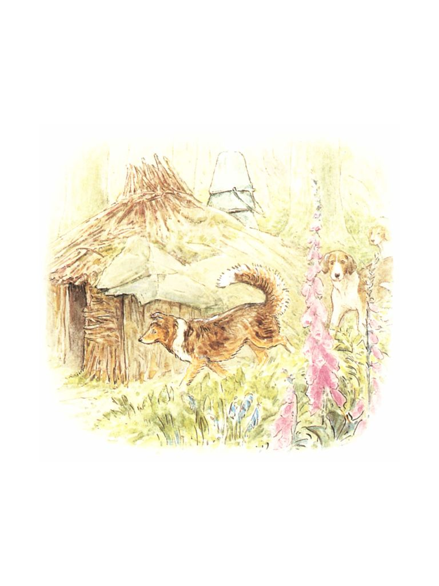
ジマイマが小屋の中にいると、小屋の裏でパタパタという足音が聞こえました。誰かの黒い鼻がドアの下でくんくんと鼻をならして、それからドアのカギが閉められてしまいました。
ジマイマはとても怖くなりました。
While she was inside she heard pattering feet round the back of the shed. Some one with a black nose sniffed at the bottom of the door, and then locked it.
Jemima became much alarmed.
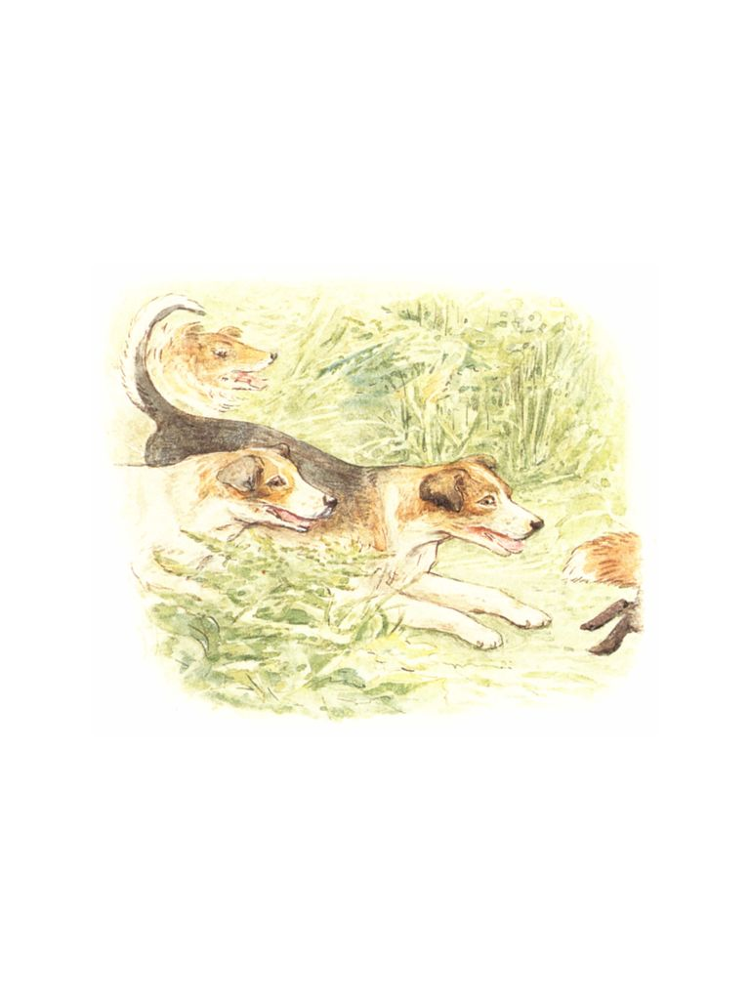
それから間もなく、吠える声と遠吠え、キーキーという金切り声やうなる声、うめき声など、ものすごく恐ろしい音が聞こえてきました。
それ以来、きつね顔のひげを生やした紳士を見かけたものはいませんでした。
騒ぎが収まったあと、すぐにケップがドアを開けてジマイマを外に出してくれました。
A moment afterwards there were most awful noises---barking, baying, growls and howls, squealing and groans.
And nothing more was ever seen of that foxy-whiskered gentleman.
Presently Kep opened the door of the shed, and let out Jemima Puddle-duck.
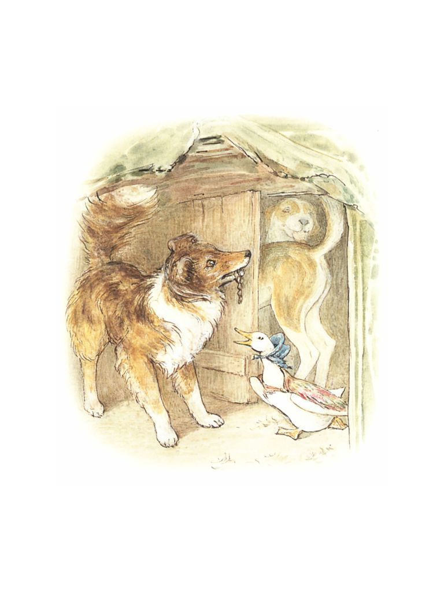
残念なことに、ケップが仔いぬ止める前に、仔いぬたちは飛び込んで、全部のたまごを平らげてしまったのです。
ケップの耳には、噛み傷がありました。そして、２匹の仔いぬたちは足を引きずっていました。
Unfortunately the puppies rushed in and gobbled up all the eggs before he could stop them.
He had a bite on his ear and both the puppies were limping.
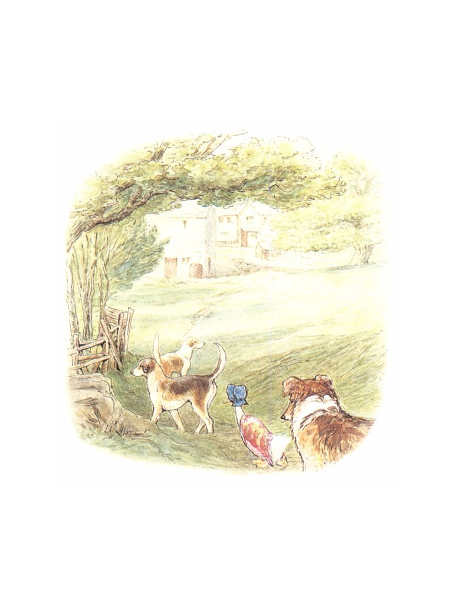
あひるのジマイマは、たまごが食べられてしまったことに悲しんで、涙しながら、いぬたちに守られて家へと帰りました。
Jemima Puddle-duck was escorted home in tears on account of those eggs.
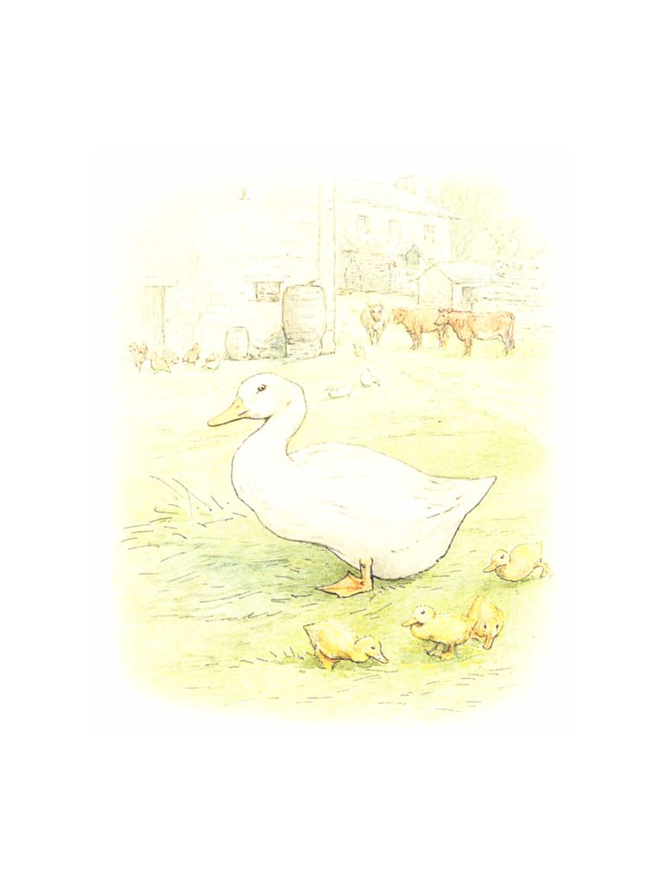
６月になると、またジマイマは、新しいたまごを産みました。そして、そのたまごを自分で抱くことになりましたが、そのうちの４つしかかえりませんでした。
ジマイマはひなが全部かえらなかったのは、自分が神経質になっていたから、と言いました。でも、本当はジマイマがたまごを温めるのがへたなのです。
おしまい
She laid some more in June, and she was permitted to keep them herself: but only four of them hatched.
Jemima Puddle-duck said that it was because of her nerves; but she had always been a bad sitter.
The end
【対訳】ピーターラビット⑪
あひるのジマイマのおはなし
―THE TALE OF JEMIMA PUDDLE-DUCK―
発行日 ２０１４年３月20日
著 者 ビアトリクス・ポター
発行者 赤井 仁
発行所 ゴマブックス株式会社
〒１０７－００５２
東京都港区赤坂８－５－40
ペガサス青山７１０
(c) GOMA－BOOKS Co.,ltd. 2014